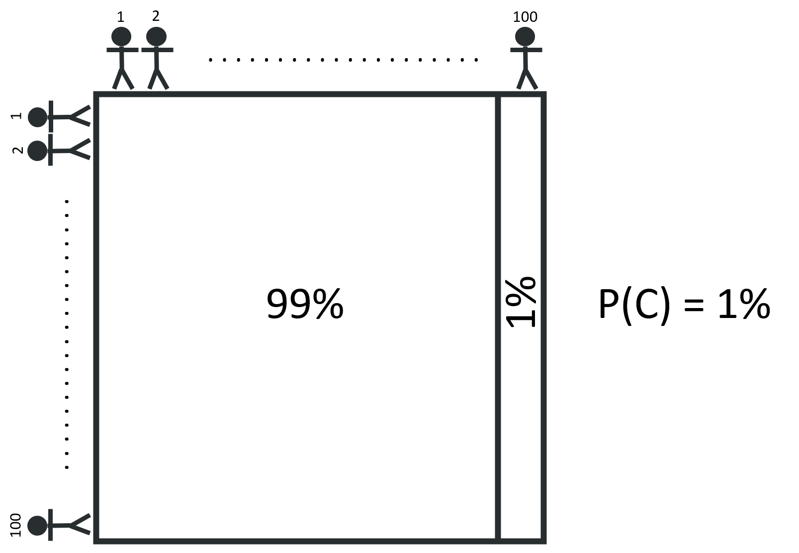
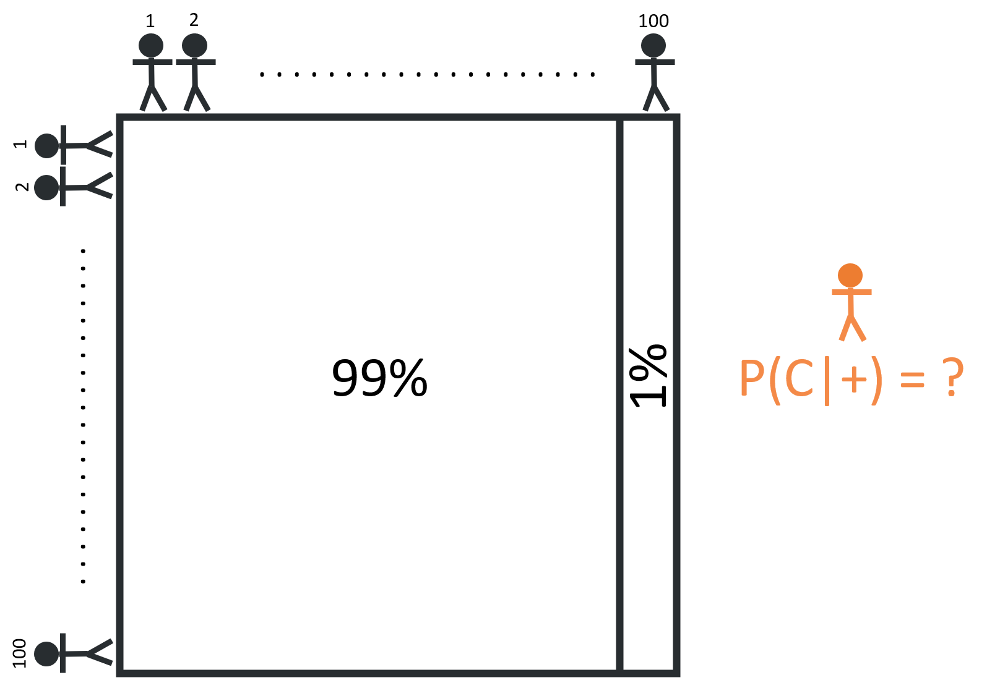
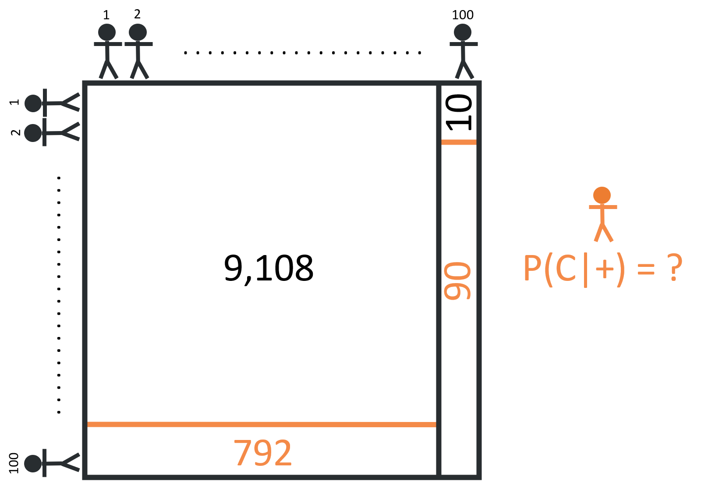
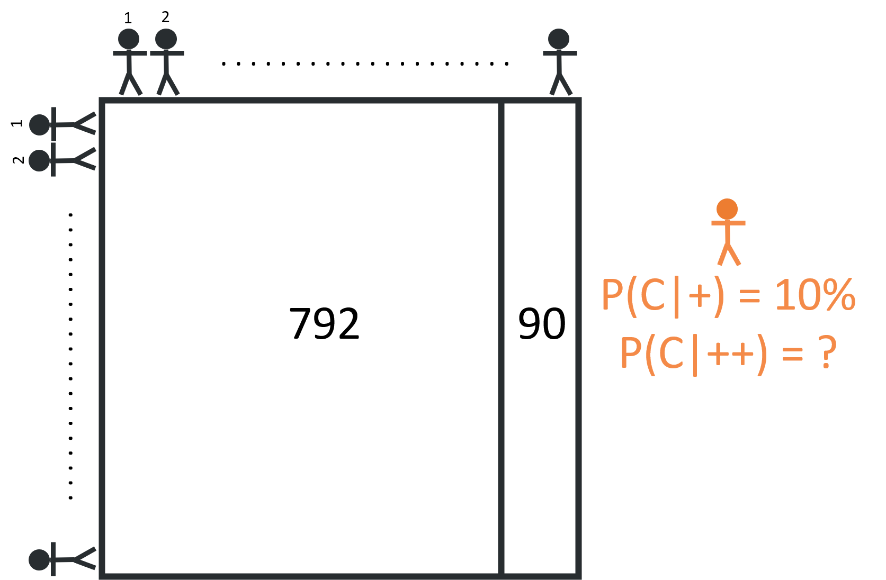
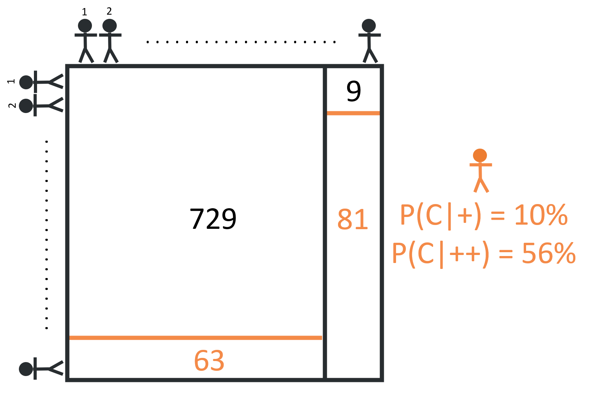
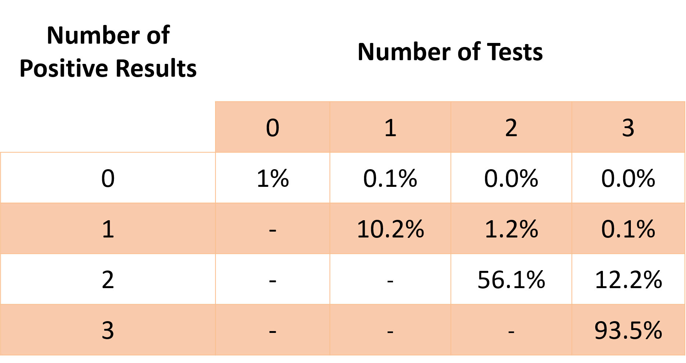

There’s a great standup routine about doctors (which I spent about an hour trying to find online with no luck!) with a punchline to the effect of, “getting a positive cancer test then requesting a second opinion is basically the medical equivalent of telling your doctor you think they’re an idiot to their face.” The joke makes sense in context (and is a lot funnier to hear, rather than read), and is logical at a general level (why would a patient, who probably isn’t a medical expert, be able to say that a doctor’s assessment is wrong?), but there’s a hidden nugget of nuance about cancer screenings missed by the joke that make them such an interesting introduction to one of the foundational equations in statistics, Bayes’ Theorem.
What is Bayes’ Theorem?
To understand Bayes’ Theorem, it’s probably best to get a grasp on frequency-based probability, which is often considered the contrast of bayesian/uncertainty-based probability. Consider a perfectly ideal coin flip. I know that, for any given coin flip, the probabilities of landing either heads-up or tails-up are exactly the same: 50%. Moreover, this is true no matter how many times I flip the coin. If the coin lands heads-up on the first flip, I still have a 50% chance of the coin landing heads-up on the next flip (and the next flip, and the next flip, etc.).
But what if I’m told the coin has a manufacturing defect, and is slightly heavier on one side (lets say, to favor tails-up)? I might assume, starting out, that the defect is small, and has a negligible effect on my odds of the coin landing heads-up. But every flip that lands tails-up changes my certainty about the true odds. That’s the heart of Bayes’ Theorem, and the biggest difference between bayesian statistics and frequentist statistics. With frequentist statistics, when the data updates, the uncertainty stays the same, whereas with bayesian statistics, when the data updates, the uncertainty updates as well.
So why is this important? Well, at a base level, just about every forecasting model needs to make use of Bayes’ Theorem. So with the long term goal of building a predictive election model, it’s pretty dang important to have a firm understanding of the foundation the model will rest on. But in a more general sense, I think it’s important to understand how views can (and should) update in the light of new data. From what I can tell, the majority of opinions (especially political opinions…) are either based on assumptions or cherry-picked data points, and typically don’t update - even when presented with new evidence. In contrast, to think like a bayesian is to weigh the severity of new information against the history of data and update your views accordingly.
Ugly vs. Pretty Bayes

Equation 1 above shows Bayes’ Theory. As expressed in statistical language, it reads, “the probability of A, given event B, is equal to the probability of B, given event A, and the probability of A divided by the probability of B.” As written, Bayes’ Theorem is… unintuitive… Even reading the description back to myself stirs up memories of fumbling through my high school stats class. The way the equation is written doesn’t lend itself towards being accessible, but, as Grant Sanderson points out in this video, reframing the equation into a geometry problem makes Bayes’ Theorem much easier to understand (much of the rest of this post is applying Bayes’ Theorem via Grant’s geometrical framing).
To understand how a geometrical framing can help make sense of Bayes’ Theorem, it’s best to run through an example. So let’s get back to the doctor’s office & cancer screening.
Let’s first consider a population group of 10,000, arranged on a grid of 100 x 100. If we know that 1% of the population has cancer, we can divide the group into two segments, cancer-free and cancerous, as shown below:

If we avoid any compounding risk factors (like age, sex, diet, etc.) & assume that the likelihood of having cancer is the same for everyone, any person in the population can say that they are 99% certain that they do not have cancer. But how might this certainty update for someone who gets a positive result from a cancer screening test?
The reliability of cancer screening tests are measured by their sensitivity & specificity. A test’s sensitivity is the the proportion of cancer-positive patients it correctly identifies (i.e., “true positives”). For example, if a screening test has a sensitivity of 90% and is used to test 100 cancerous patients, we’d expect 90 of these patients to receive a correct positive result and the remaining 10 patients to receive an incorrect negative result. The specificity, on the other hand, is the proportion of cancer-free patients the test correctly identifies. If the screening test’s specificity is 92% and is used to test 100 cancer-free patients, we’d expect 92 patients to correctly receive a negative result and 8 patients to incorrectly receive a positive result (a “false positive”). I tend to find it easier just to think about the positive cases, so from now on, I’ll refer to a test’s true positive rate and false positive rate, rather than the sensitivity & specificity.
Let’s assume that a cancer screening test has the true positive & false positive rates above, 90% & 8%, respectively. How certain should someone who tests positive be that they truly have cancer? A test that gives a true positive 90% of the time seems pretty damning, but the 8% false positive rate isn’t insignificant. An important step is to realize that this person is no longer looking for the probability of having cancer, but instead looking for the probability of having cancer given that they have a positive test result.

For someone who receives a positive test result, it may be helpful to think about the hypothetical question: “What if everyone took this test?” This reframing can help us think in terms of people, rather than probabilities.
Given that 1% of the 10,000 person population has cancer, we can divide the group into two segments: 100 people with cancer, and 9,900 people without cancer.
If everyone takes the screening test, we’d expect 90 true positives (90% x 100 = 90) and a whopping 792 false positives (8% x 9,900 = 792)!

Although the test is fairly accurate in terms of sensitivity & specificity (90% and 92% are both considered A’s, by most grading standards) the sheer number of non-cancerous people in the population results in a large number of false positives. Of all the 882 positive cases (792 + 90 = 882), only 90 are true positives, meaning that the probability of having cancer given a positive test result is about 10% (90 / 882 = 10.2%). While this is a significant increase from the prior assumption, 1%, it’s still far likelier that someone with one positive test result doesn’t have cancer. This is why it’s important to get a second opinion. It’s not that your first doctor is an idiot, just that your uncertainty has changed!
Now what would happen if all the people who received a positive result took another test? Well, of this subset of 882 patients, we expect that 792 are cancer free and 90 are cancerous:

When these 882 patients take the second test, we still expect the test to hold the same true positive & false positive rates - meaning we can expect 81 true positives (90% x 90 = 81) and about 63 false positives (8% x 792 = 63). This means that, of the 144 positive cases (81 + 63 = 144), 81 are true positives, and the probability of having cancer given two positive results is about 56% (81 / 144 = 56%).

With this new round of data from test results, those who receive a second positive result once again update their prior assumption from 10% to 56%. In fact, every test result, positive or negative, should either support or refute the prior. Each positive test result, appropriately, increases your likelihood of actually having cancer. Similarly, each negative result decreases your likelihood.

That’s the beauty of Bayes’ Theorem in a nutshell. Gathering new information allows you to update your prior belief!
In Summary…
I may have gotten too in the weeds with this post, though, to be fair, walking through Bayes’ Theorem in detail also helps my understanding. I likely wont dive as deep into stats topics in the future. In part, they’re a bit of a slog to read through if you’re not as excited as I am by this kind of stuff. But it also took me a good chunk of time to write this post. Going forward, I’d like to better balance my time between the three goals of coding, writing, and learning stats.
As always, I’ve posted my work to github, though this file just includes an excel workbook & a few pictures. Next week, I’ll dig more into plotting with ggplot - likely with a much shorter post!
Citation
@online{rieke2021,
author = {Mark Rieke},
title = {Your {Doctor} {Probably} {Isn’t} an {Idiot}},
date = {2021-01-24},
url = {https://www.thedatadiary.net/posts/2021-01-24-your-doctor-probably-isn-t-an-idiot},
langid = {en}
}